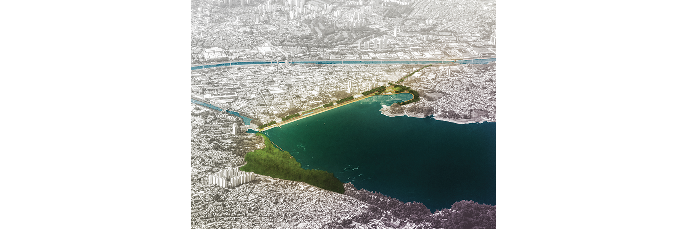
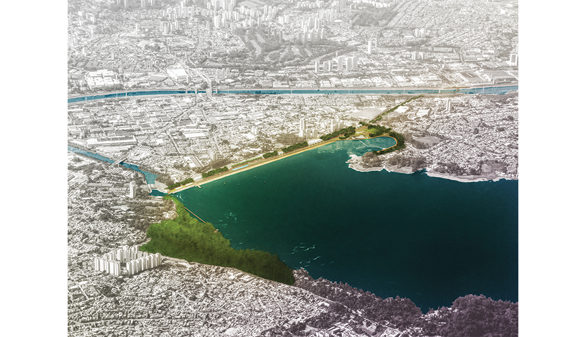
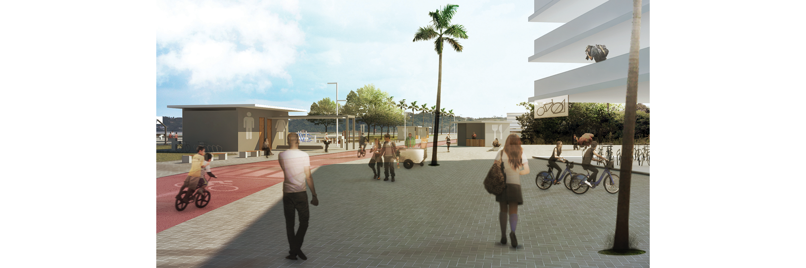
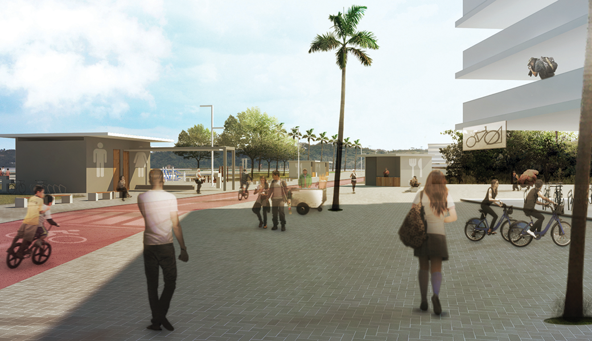
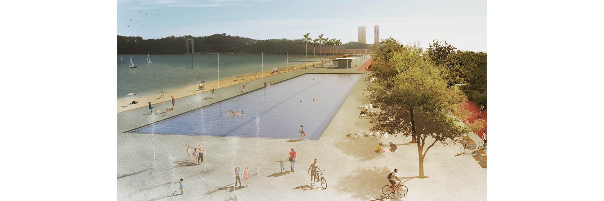
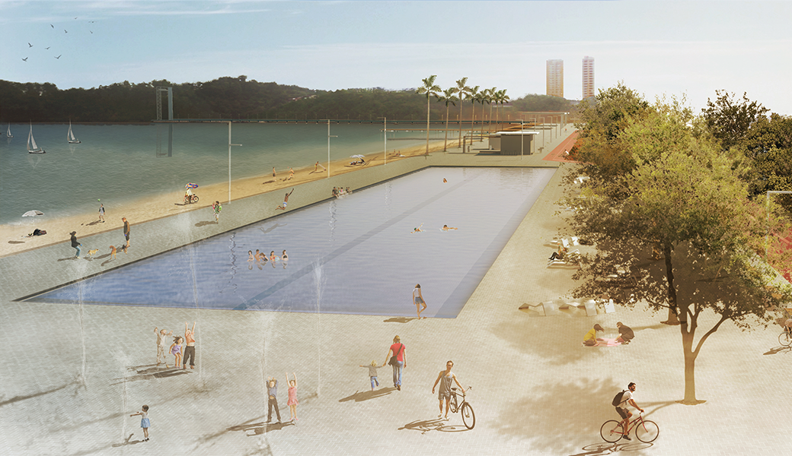
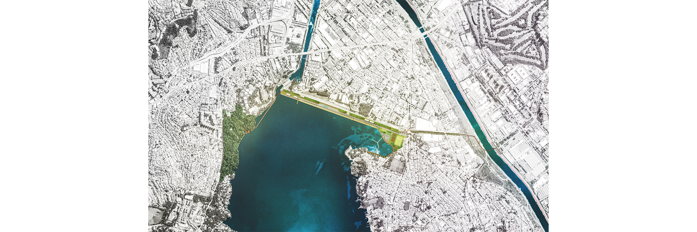
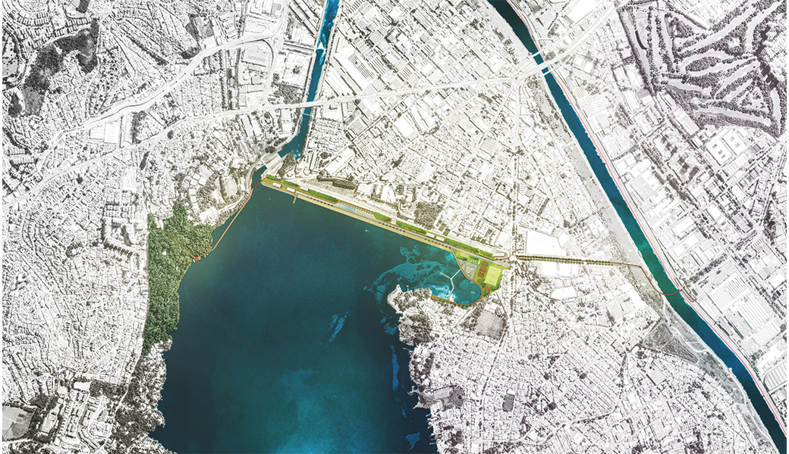
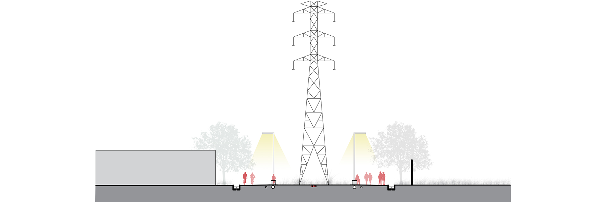
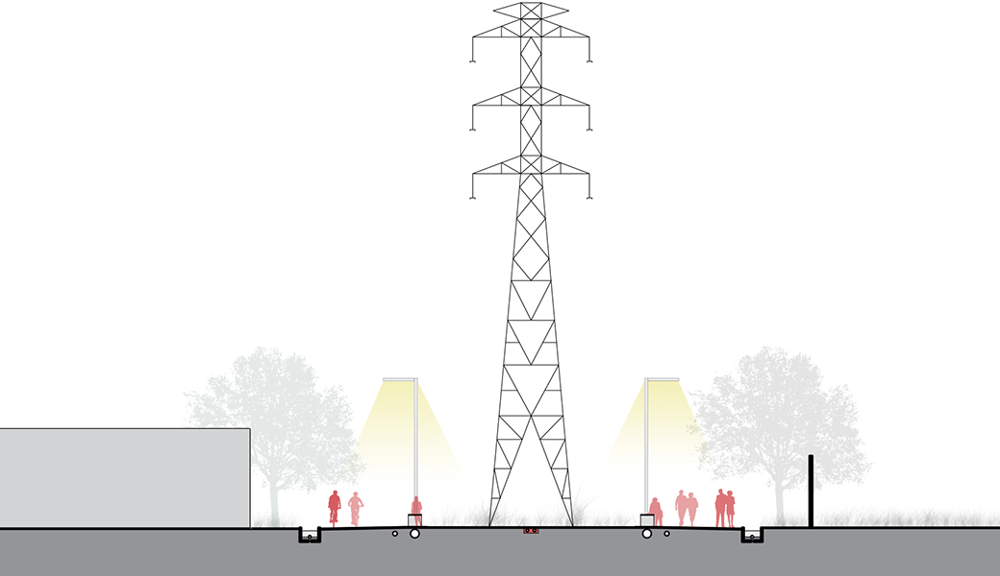
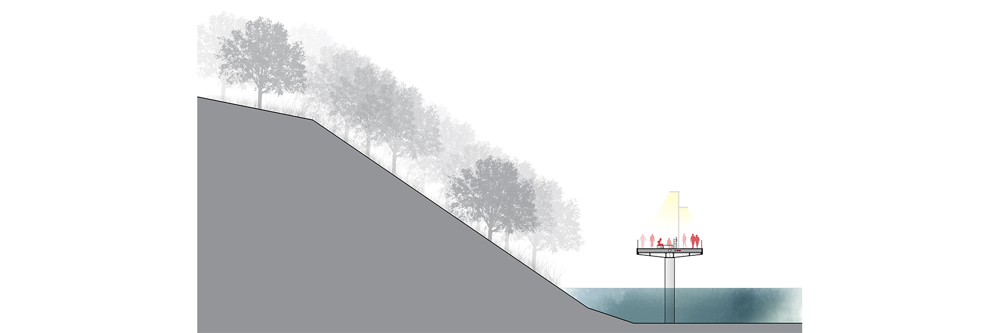
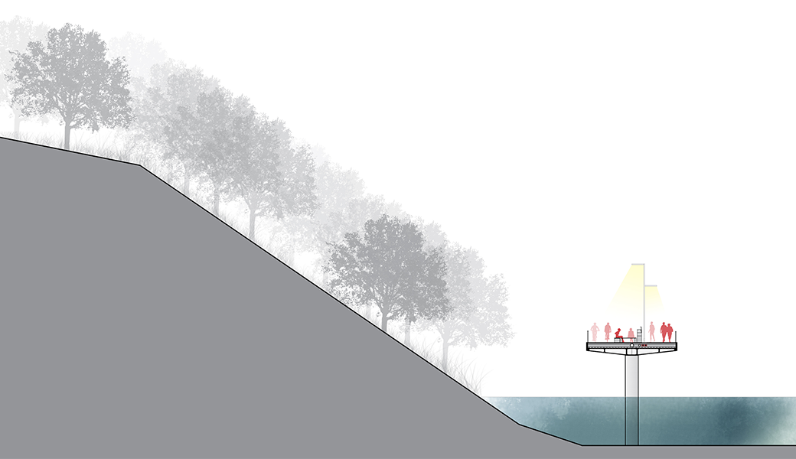
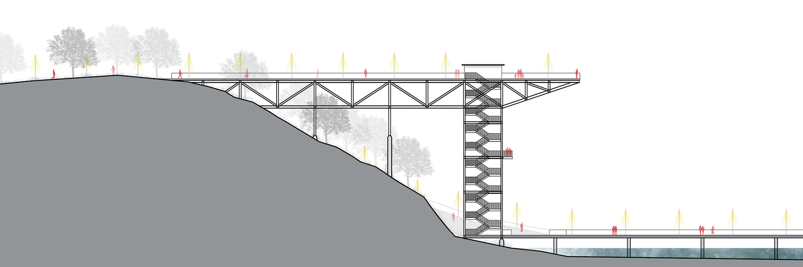
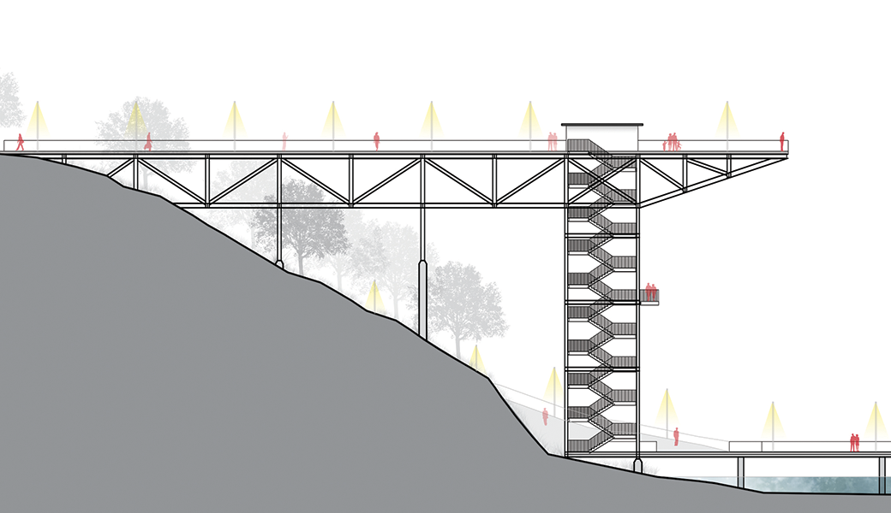
Currently, peripheral neighborhoods located to the west of the Guarapiranga Reservoir, such as Jardim Ângela and Alto da Riviera, have their connection to the rest of the city hindered by the presence of the dam. To bypass the reservoir, which is seen by the highway logic as an obstacle, and to reach the main transportation network of the metropolis, residents of the area use buses and cars to cross the body of water.
The concentrated motorized traffic on these roads, designed for heavy car flow, makes it difficult to choose other modes of transportation due to the risk of accidents on the streets and avenues that make up the "overflow" system of people flow.
In this context, we've proposed the creation of a new route to cross the reservoir, completely focused on active transportation modes, taking advantage of the scenic potential of its banks to structure a variety of programs. The final result of the route is a set of parks and an urban beach, equipped with facilities for various uses such as culture, sports, and leisure. The objective of this integration between crossing and programs is to use the scenic space of the reservoir as a stage to promote social interaction among citizens in public spaces.